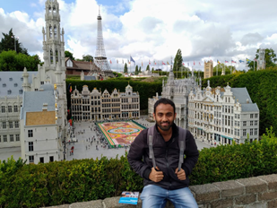

Germany and beyond | Sagar Chaudhary
June 18, 2020

I wouldn't tell you that “Ever since I came to IIT Kanpur, I knew I wanted to go into research”. When I came to the campus, I just wanted to explore new things. I did not know what I wanted to do, and maybe, it’s okay to not know exactly what you want. In my first year winters and the summers after that, I decided to take up robotics. Though I learnt new things and finished the projects, I concluded it wasn’t for me.
In my 2nd year, I wanted to give research a try, so I decided to apply for SURGE. After getting rejected by a few professors who did not have any projects or who simply didn’t want to take up students, Professor P.K. Panigrahi agreed to give me a project in the field of microfluidics. I found the project really interesting, learnt various experimental and simulation techniques, and worked with cool equipment. The results of the experiments and simulation turned out to be great and my supervisor decided that we should go for a conference paper. I got a bit lucky as everything fell in line, and our paper got accepted to the FMFP-2018 conference. Presenting the paper at the conference at IIT Bombay was an amazing experience. I got a chance to speak in front of accomplished scientists in their respective fields and got to know about current research going on in the field of fluid mechanics.
I had seen many seniors go for research internships abroad, post pictures online and write blogs about it which I always found really inspiring (and a major driving factor to be honest). My experience with research had been quite fulfilling and satisfactory the previous summers which motivated me to pursue research further. All this motivated me to apply for a research internship abroad, and since I had prior research experience, I had some confidence that I could get one (although you can never be sure).

Internship programs vs. Apping
So there are two ways of applying for internships abroad: First is through internship programs and the second is by applying to professors directly by emailing them (also called “apping” by cool kids), asking them to take you for an internship.
Internship programs:
I applied to the DAAD-WISE program, MITACS, and RIYA. After applying, I was eagerly waiting for the results, although, I knew my chances of getting into these were slim as these are very competitive and require a high CPI. I got rejected by all three and obviously felt bad about it, but I knew that it could happen which is why I was also “apping” simultaneously.
Apping:
For apping, you email the professors directly with your CV and transcript, telling them about your research interests and relevant past experiences, asking them whether they would be willing to take you for an internship during the summers.
For the CV, I got the template from a senior and made it in a way that would highlight my experiences nicely. I also got the template for the email from the same senior. Now I needed to find the professors to whom I could send the email. I went to the websites of many universities and searched for professors whose research areas aligned with my past projects or interests. A lot of times, going to the webpage of that particular professor helps as it might have information of other groups that he/she is currently collaborating with which might lead you to other potential professors. You can also search the google scholar page for your areas of interest and find professors working in that field.
I tried to send 4-5 emails per day. Mostly I got no replies, some negative replies and some professors offered internships with zero stipend. During that time, I checked my webmail a lot more than any of my other social media accounts, always waiting for a reply, didn’t matter whether it was positive or negative. The most important thing, in my opinion, is to just be consistent and not get dejected by negative replies, which could be hard at times especially when you’re watching your friends getting SPO internships and posting #SummerSorted and #AndhaPaisa on each other’s timelines. But trust me, if you do get a foreign internship it would all be worth it as it’s an experience like none other (at least in my case).
All you need is one positive reply
While apping, I had sent an email to the director of the Max Planck Institute of Dynamics and Self-Organization, Germany (abbreviated as MPIDS, the institute where I did my internship) asking for an internship. A few weeks later, his scientific assistant Dr. Guido replied informing me about the institute’s own internship program called the “Ludwig Prandtl Internship” and asking me if I would be interested in applying for the same. I replied assertively and sent the required documents not thinking much about it at that time. Months passed. I had lost almost all hope of getting a research internship abroad when one day in January while sitting in my room, I received a really exciting email from MPIDS informing me that I had been selected for their internship program. I can’t explain that feeling. I was the happiest I’d been in months. I literally jumped with joy and kept reading it again and again, to make sure it was actually happening! After completing the formalities, I just had to wait for my Visa to arrive and prepare for the journey. I was excited and scared at the same time.
The Internship
On my first day at the institute, I was greeted by Dr. Guido. He showed me an interesting presentation about the history of Göttingen (the city where the institute was) and the Max Planck organization and then gave me a tour of the institute. I was given an amazing office with a really awesome view outside the window. I met my project supervisor, an independent researcher at MPIDS, who introduced the project and explained the kind of work I would be doing.
My project was related to the control properties of granular matter. The work was divided into 3 parts. First, I had to automatize the experiment using electronic equipment and code, the second part was conducting the experiments and finally, I had to analyze the data collected through the experiments. The lab that I was working in was being used only by me, so it was kind of my personal lab, which I thought was pretty cool. After about two and a half months, we got some really interesting results (different from what we expected) which my supervisor believed could be turned into a paper.
The institute had people from different parts of the world and it was really nice to see the diversity. Getting to know all those people and having interesting conversations over lunch (that our department used to have together) was one of the many fond memories I have of my internship. Guest researchers from all over the world gave really engaging and thought-provoking talks about their research every week at the auditorium. Even our department had something called “Plenum” every other Wednesday where group leaders would deliver a talk about current research going on in their groups.

Another fun and important aspect of a foreign internship is traveling. Picture it like this: you’re being paid to work on a project you really like and simultaneously travel the world! It can't get better than this. During my internship, I traveled to a lot many places inside and outside of Germany including, but not limited to, Berlin, Hamburg, Cologne, Leipzig, and Belgium. Visiting all these places that I had only dreamed of, experiencing the culture, and getting to know the history was quite exciting. Planning the trips is a different kind of fun altogether. Doing research about what places to visit and what things to do got me excited before the actual trip. Traveling could be expensive sometimes but there are a lot of cost-saving options too. Flixbus is a quite affordable bus service that you can use to travel all around Europe. For accommodation, you can try Airbnb and youth hostels. Traveling alone in a different country teaches you a lot of things and gives you a new perspective. I felt adventurous and had newfound confidence while on these trips.

Pro tip: Never doze off while waiting for your bus. You could miss it and might have to spend the night at the station waiting for the next one. (Not based on a true story at all).
I stayed at the MPIDS guesthouse during my internship. Living independently is a unique experience in itself. I did everything on my own, be it going to the supermarket, ironing my clothes or cooking. Very often, I would find myself on YouTube, looking up for a new recipe to try. I would say all of this made me a more mature individual and gave me a new sense of responsibility. At the end of my internship, I delivered a talk at the institute about my work. Delivering a talk at such an esteemed research institute in front of all those eminent scientists felt like a dream come true. I consider myself very lucky that my supervisor was really a supportive and nice person and I would always be grateful to him for teaching me so many things during the internship. We are still in contact and I’m continuing the project with him.
In the end, I would say that work hard, travel a lot, enjoy yourself as much as possible, and just give it your all, and this could for sure turn out to be an experience of a lifetime.
P.S. If any of you reading this blog ever have any doubts regarding this, don’t hesitate to hit me up.
-Sagar Chaudhary
-edited by Manit Ajmera